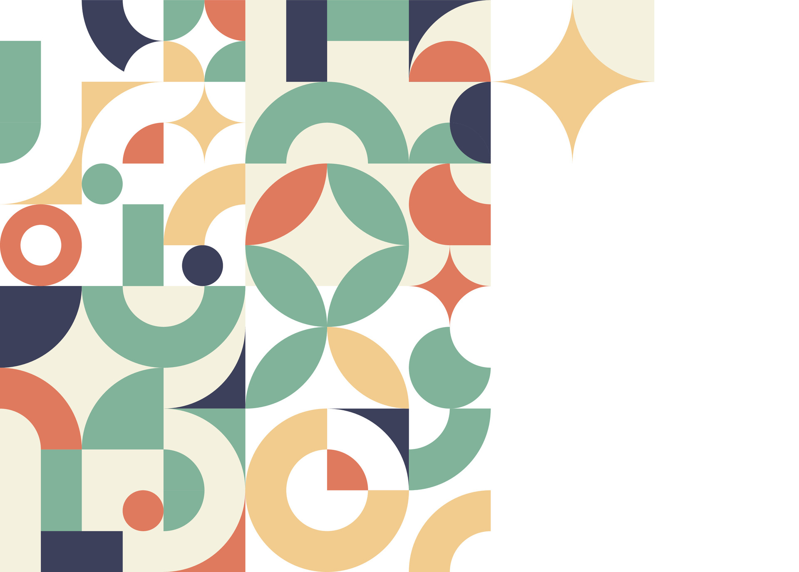

Blog container of homeworks about teaching:
Statistics A.Y. 2026-27
Sapienza University of Rome
Below in the page you can find the posts corresponding to the weekly assigned homeworks.

Below in the page you can find the posts corresponding to the weekly assigned homeworks.